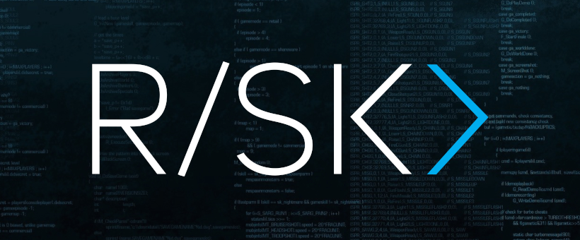

<div class="row">
	<div class="col-xs-12 jumbotron">

        <div>
            
        </div>
        <br>

		<p>
			RISK predstavlja organizaciju koja za cilj ima okupljanje i edukaciju
			studenata zainteresovanih za oblast računarstva i informatike.
			RISK je zvanično osnovan 2015/2016 godine od strane
			tadašnjeg studenta osnovnih studija Nemanje Mićovića sa namerom da
			se u okviru jedne organizacije okupi grupa studenata zainteresovanih
			za razvoj softvera, praktične projekte i ostajanje u toku
			sa novim tehnologijama.
        </p>
        <p>
            RISK je sa svojim radom intenzivno
			počeo školske 2016/2017 i od tada je održano preko 20 okupljanja
			koja su bila ili u obliku mini kursa za neku od aktuelnih tema ili
			okupljanje studenata za rad na njihovim projektima.
			Okupljanja su uključivala obradu aktuelnih tema poput razvoja mobilnih aplikacija
			za sistem Android, razvoj video igara kroz radni okvir Unity, blockchain i primenjena
			kriptografksa rešenja, računarsku grafiku na Vebu i slično.
			Trenutna fejsbuk strana broji preko 600 članova, a na okupljanima
			su osim studenata MatF-a česti posetioci naše drage kolege sa ETF-a, RAF-a i FON-a,
			a nije retkost i da kao gostujući predavači dođu predstavnici raznih kompanija.
			Uz veliku podršku Katedre za računarstvo i informatiku
			organizacija RISK predstavlja centralno mesto okupljanja studenata zainteresovanih
            za dodatnu edukaciju i sticanje praktičnih znanja.
            Vise informacija o RISK-u se može pronaći u zvaničnoj <a href="https://github.com/riskmatf/risk-media/blob/master/prezentacija/slides.pdf">prezentaciji</a>.
		</p>
		<p>
			Studenti se izuzetno ohrabruju da posećuju okupljanja organizacije RISK,
			predlože ili spreme neko interesantno predavanje ili kroz
			organizaciju dođu do studenata sa kojima bi zajedno radili na svom projektu i ideji.
			Ukoliko ste zainteresovani za održite neko predavanje, možete se prijaviti na sledećoj
			<a href="https://docs.google.com/forms/d/e/1FAIpQLSfg1xM9EjhyOcUR9AIpQm6bhq6RflLOhWriCPTwl2TiNviAhA/viewform?fbclid=IwAR0k4wPEmvc2yJ4MjXQhnOX2ZvcxlUAEGPJ0ZO_uKAIIbSverKn4yoJQwqE" target="_blank">formi</a>.
		</p>
		<p>
			Glavni organizator RISK-a je <a href="http://poincare.matf.bg.ac.rs/~nemanja_micovic/">Nemanja Mićović</a>,
            asistent na <a href="http://www.racunarstvo.matf.bg.ac.rs">Katedri za računarstvo i informatiku</a>. U organizaciji veliku pomoć
			pružaju studenti MatF-a Peđa Trifunov, Stevan Nestorović, Vuk Novaković i Stefan Pantić.
			Za sva dodatna pitanja, ideje i sugestije možete se javiti na <strong>nemanja_micovic@matf.bg.ac.rs</strong>
			ili <strong>risk@alas.matf.bg.ac.rs.</strong>
		</p>
	</div>
</div>
